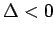
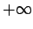
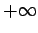

Die ganzrationale Funktion 3. Grades
Das Verhalten der Funktion hängt von a und der Diskriminante ab. Wenn ist (obere linke und rechte Abbildung), dann nimmt die Funktion für a > 0 monoton zu, für a < 0 monoton ab.
Die Funktion besitzt ein Maximum und ein Minimum, wenn  ist (untere Abbildung): Für a > 0 nimmt sie von  bis zum Maximum zu, dann fällt sie bis zum Minimum ab, um danach bis  anzusteigen; für a < 0 nimmt sie von bis zum Minimum ab, steigt danach bis zum Maximum an, um schließlich bis
bis zum Maximum zu, dann fällt sie bis zum Minimum ab, um danach bis  anzusteigen; für a < 0 nimmt sie von bis zum Minimum ab, steigt danach bis zum Maximum an, um schließlich bis  abzufallen.
abzufallen.
Die Schnittpunkte mit der x-Achse lassen sich als reelle Wurzeln von (2.42) für y = 0 berechnen. Es kann eine reelle Wurzel geben, zwei (dann gibt es in einem Punkt eine Berührung mit der x-Achse) oder drei: Der Schnittpunkt B mit der y-Achse liegt bei (0,d), die Extrema C und D bei
Der Wendepunkt E, der zugleich Symmetriepunkt der Kurve ist, liegt bei
Die Tangente besitzt in diesem Punkt den Richtungskoeffizienten